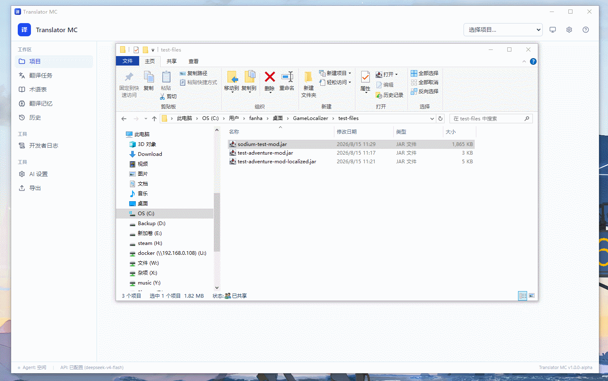
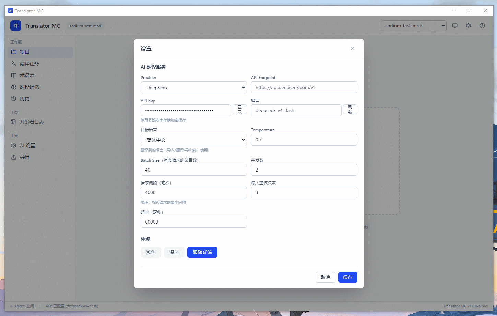
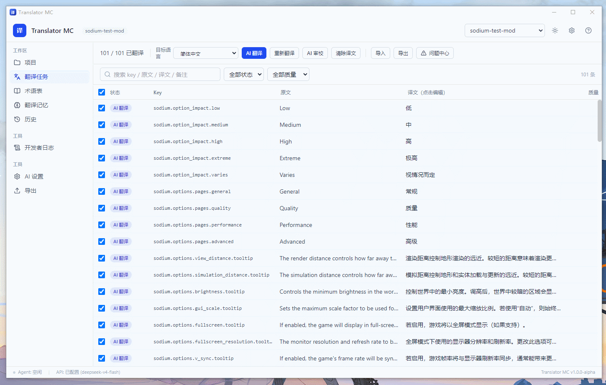
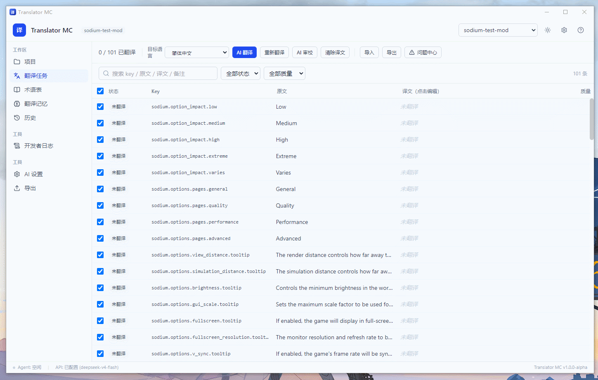
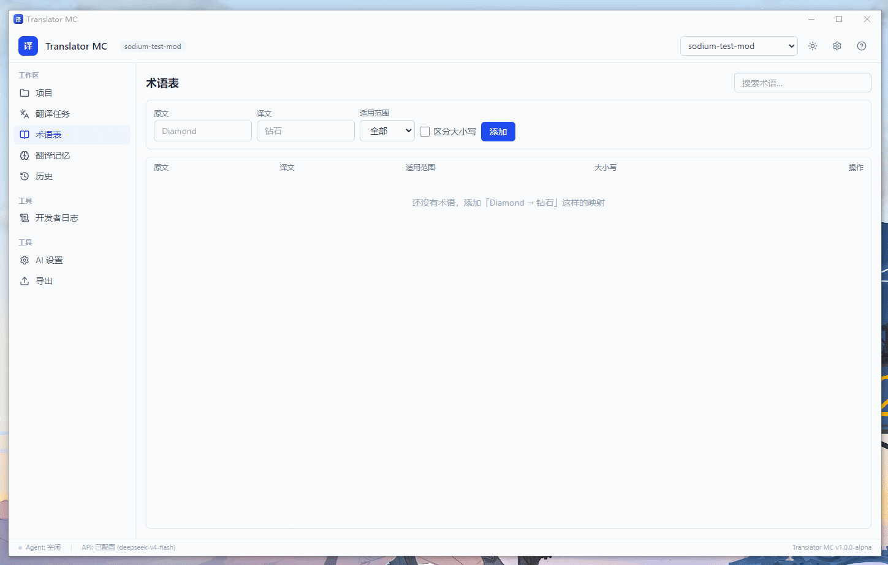
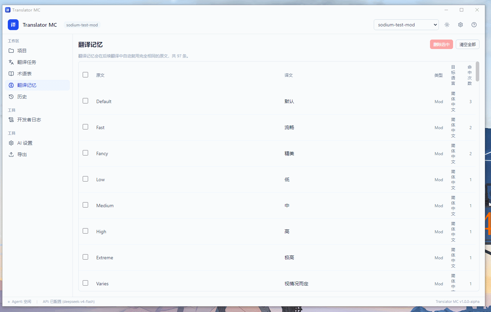
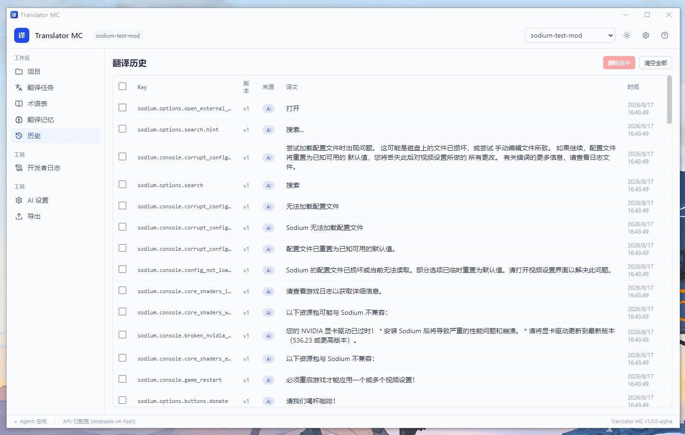
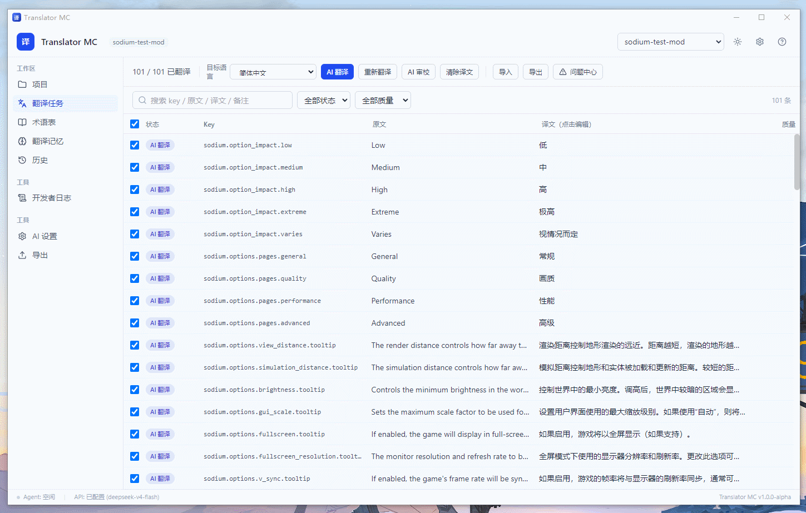

Translator MC 使用帮助
AI 驱动的 Minecraft 模组 / 资源包 / 光影包本地化翻译工具 · 版本 1.0.0-alpha
一、安装与启动
方式 A：安装版（推荐）
- 运行
Translator-MC-Setup-win-1.0.0-alpha.exe - 按提示选择安装目录（可勾选「创建桌面快捷方式」）
- 安装完成后双击桌面图标启动
方式 B：免安装版（便携版）
解压 Translator-MC-mobile-win-1.0.0-alpha.zip，直接双击里面的 Translator MC.exe 即可，无需安装。
方式 C：开发模式（需要 Node.js 20+）
npm install npm run dev
软件数据（项目、术语表、翻译记录）保存在 %APPDATA%\game-localizer\gamelocalizer.db，卸载或删除软件不会丢失数据。
界面总览
- 顶栏：当前项目名、项目切换下拉、主题切换、设置、帮助
- 状态栏：Agent 工作状态、AI 服务配置状态、版本号
二、快速上手（5 分钟）
- 导入：把
.jar/.zip或文件夹拖进主界面框里，或点「选择文件 / 选择目录」 - 确认识别结果：弹窗会显示自动识别的类型（Mod / 光影包 / 资源包）和提取到的文本条数，点「导入」
- 配置 AI：左侧「AI 设置」→ 选 Provider、填 API Endpoint、粘贴 API Key、填模型名，选目标语言
- 翻译：在翻译工作台勾选条目，点「AI 翻译」
- 导出：顶部「导出」→ 选「资源包」或「修改后的 Jar」→ 导出
三、功能详解
1. 导入与识别
支持拖拽或选择文件，自动识别内容包类型，无需手动指定：

| 内容包类型 | 识别依据 |
|---|---|
| Mod | fabric.mod.json / quilt.mod.json / mods.toml / mcmod.info |
| 资源包 | pack.mcmeta |
| 光影包 | shaders/ 目录 |
- 自动找语言文件并解析（JSON / JSON5 / .lang / .properties / YAML / TOML）
- 源语言自动适配：英语、日语、韩语、德语、法语、俄语等均可作为源语言
- 检测已有目标语言翻译（如
zh_cn），标记为「自带中文」，默认不覆盖
2. AI 设置（左侧「工具 → AI 设置」）

| 字段 | 说明 |
|---|---|
| Provider | 内置 OpenAI / DeepSeek / 智谱 GLM / Moonshot(Kimi) / Ollama / LM Studio / 自定义 |
| API Endpoint | 接口地址，选 Provider 会自动填充（可改） |
| API Key | 使用系统安全存储加密保存，不落明文 |
| 模型 | 手动输入，或点「刷新」调 GET /models 自动拉取 |
| 目标语言 | 翻译到的语言（12 种：简中 / 繁中 / 港繁 / 日 / 韩 / 英 / 法 / 德 / 俄 / 西 / 葡 / 意），导入、翻译、导出统一使用 |
| Temperature | 随机性（0~2，默认 0.7） |
| Batch Size | 每条请求翻译多少条（默认 40） |
| 并发数 | 同时发几个请求（默认 2） |
| 请求间隔 | 限速：相邻请求最小间隔毫秒数（默认 4000） |
| 最大重试次数 | 失败重试（默认 3，指数退避 1s→2s→4s→8s） |
| 超时 | 单次请求超时毫秒数（默认 60000） |
常用配置示例：
- DeepSeek：Endpoint
https://api.deepseek.com/v1，模型deepseek-chat - Ollama（本地）：Endpoint
http://localhost:11434/v1，模型qwen2.5:7b，API Key 留空 - 智谱：Endpoint
https://open.bigmodel.cn/api/paas/v4，模型glm-4-flash
3. 翻译工作台（「翻译任务」页）
顶部工具栏
| 按钮 / 控件 | 作用 |
|---|---|
| 目标语言下拉 | 直接切换翻译目标语言，与 AI 设置联动，即改即存 |
| AI 翻译 | 翻译勾选的条目（批量、并发、限速、失败重试） |
| 重新翻译 | 重新翻译全部非自带中文的条目 |
| AI 审校 | 用第二个 Agent 检查译文质量，评分 < 70 自动标记「需审核」 |
| 清除译文 | 清空所有译文（自带中文不会被清除） |
| 导入 / 导出 | 快速入口 |
| 问题中心 | 查看所有校验问题 |


翻译表格
- 列：勾选框、状态、Key、原文、译文、质量分
- 勾选 = 参与汉化（未勾选的条目不翻译、不导出）
- 双击译文单元格直接编辑，回车保存（自动保存）
- 搜索框按 Key / 原文 / 译文 / 备注搜索；状态筛选、质量筛选
翻译进行时右侧出现 进度面板，显示进度条、步骤清单（文件分析 → 术语提取 → AI 批量翻译 → 校验），可暂停 / 继续 / 取消。
4. 术语表（「术语表」页）

- 添加「原文 → 译文」映射（如
Diamond → 钻石、Nether → 下界） - 术语自动注入翻译 Prompt，保证同一术语翻译一致
- 翻译后校验：若原文含术语但译文未用对应译名，标记「术语冲突」
- 支持设置适用范围（全部 / Mod / 光影包 / 资源包）和区分大小写
5. 翻译记忆（「翻译记忆」页）
- 自动积累：每次翻译完成后记录「原文 → 译文」对
- 再次遇到完全相同的原文时直接复用记忆，不调用 AI（省时省钱）
- 列表显示每条记忆的命中次数

6. 历史（「历史」页）
记录每次译文变动：来源（AI / 人工 / AI 审校 / 自带）、版本号、时间。

7. 导出（左侧「工具 → 导出」）
方案 A：汉化资源包（输出 .zip）
- 生成
pack.mcmeta+assets/<命名空间>/lang/目标语言.json - 放到游戏
.minecraft/resourcepacks/即可作为汉化资源包使用
方案 B：修改后的 Jar（输出 xxx-localized.jar）
- 在原 Mod 旁生成新文件，原文件永不改动，直接替换原 Mod 使用即可
导出前建议点「导出前检查」，会检查：空翻译、占位符错误、格式代码、重复 Key 等。可勾选「跳过自带中文」只导出本次新翻译的内容。

8. 问题中心
汇总所有校验问题（占位符错误、术语冲突、格式代码丢失、缺失译文、翻译失败等），点「标记已解决」逐条处理。
9. 开发者日志
实时显示软件运行日志（DEBUG / INFO / WARN / ERROR），方便排查问题。
四、常见问题（FAQ）
Q1：点「AI 翻译」提示"请先在 AI 设置中配置"？
还没配置 API Endpoint 或模型。去「AI 设置」填写即可。
Q2：翻译失败，提示"AI 服务错误 (HTTP 4xx)"？
通常是 API Key 无效或 Endpoint 拼写错误。检查设置；「开发者日志」里能看到具体错误。
Q3：提示"请求过于频繁 (429)"？
被服务商限流了。在「AI 设置」里增大「请求间隔」、减小「并发数」。
Q4：翻译后有的条目显示"需审核"？
占位符（%s 等）或术语校验没通过。点「问题中心」查看详情，手动修改译文。
Q5：导出的 Jar 会覆盖我的原 Mod 吗？
不会。导出永远生成新文件（-localized 后缀或独立 zip）。
Q6：软件数据存在哪里？能备份吗？
%APPDATA%\game-localizer\gamelocalizer.db，直接复制该文件即可备份。
Q7：API Key 安全吗？
安全。使用操作系统密钥链（Windows DPAPI）加密后存储，不落明文，也不会出现在日志里。
Q8：怎么切换翻译语言？
两个入口：翻译工作台顶部的「目标语言」下拉（推荐，即改即存）；或「AI 设置」里的目标语言下拉。支持 12 种语言。
五、快捷键
| 快捷键 | 功能 |
|---|---|
| 双击译文单元格 | 编辑译文 |
| Enter / 失焦 | 保存译文 |
| Esc | 取消编辑 |
| Esc（弹窗中） | 关闭弹窗 |